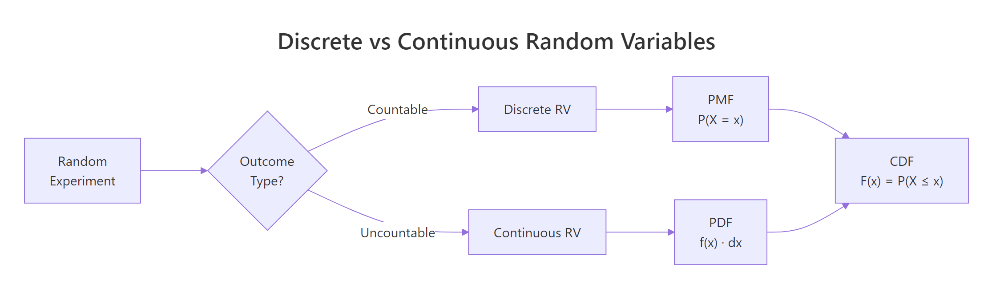
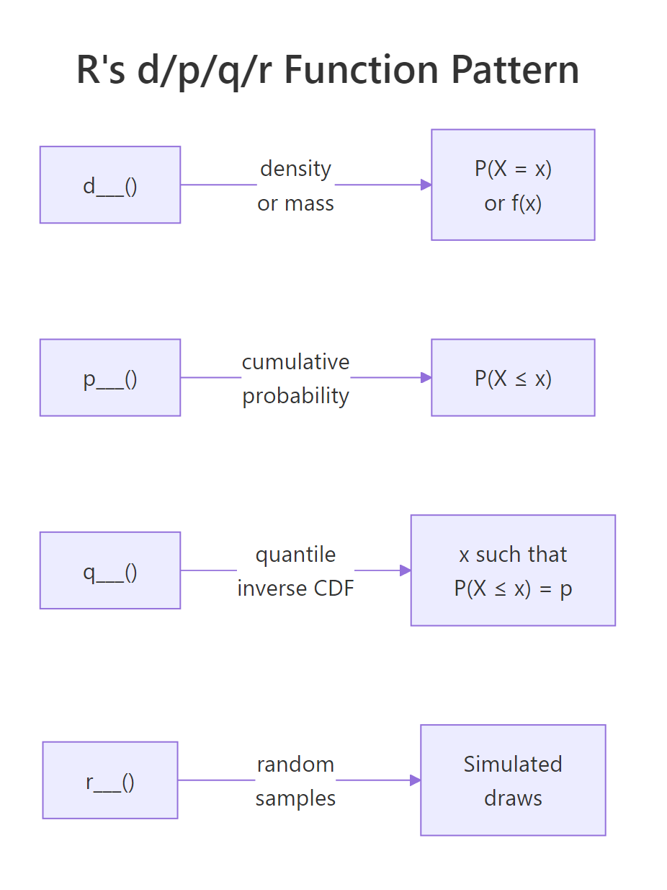
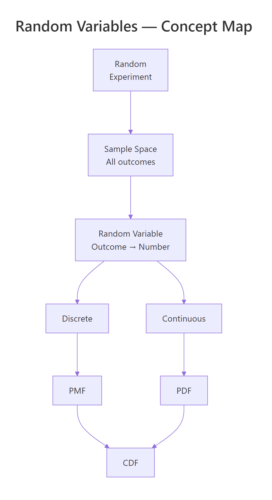

Random Variables in R: Discrete vs Continuous, PMF, PDF, and CDF, Visualised
A random variable is a function that assigns a number to every outcome of a random experiment, and R gives you a consistent set of tools to compute probabilities, densities, quantiles, and random draws for any distribution.
What is a random variable, and why does R care?
Every time you roll a die, flip a coin, or measure a patient's blood pressure, the result is uncertain, but you can still attach numbers to the possible outcomes. That mapping from outcome to number is a random variable. Let's see one in action: we'll simulate 1,000 dice rolls and count how often each face appears.
Each face shows up roughly 167 times (1,000 / 6), which matches our intuition for a fair die. The variable rolls holds the realised values of a random variable, the rule that says "read the top face and record its number."
In probability notation, we write the random variable as a capital letter like $X$, and a specific observed value as lowercase $x$. So $X$ = "the face you roll" and $x = 4$ means you rolled a four.
Here's another example. A coin flip can be turned into a random variable by mapping Heads to 1 and Tails to 0.
The mean of 0.488 is close to the theoretical 0.5, our simulated coin is approximately fair.
Try it: Simulate 2,000 rolls of an 8-sided die (faces 1 through 8) and compute the sample mean. It should be close to 4.5.
Click to reveal solution
Explanation: The theoretical mean of a uniform discrete distribution on 1 to 8 is $(1+8)/2 = 4.5$. With 2,000 rolls, the sample mean is very close to this value.
How do discrete and continuous random variables differ?
Not all random variables work the same way. The crucial distinction is whether the possible values are countable or uncountable.
- Discrete random variables take on a countable set of values, die faces (1 through 6), number of emails per hour (0, 1, 2, ...), defective items in a batch. You can list them out.
- Continuous random variables can take any value in an interval, height (170.342... cm), temperature (36.6127...°C), waiting time (4.8 minutes). You cannot list every possibility because there are infinitely many values between any two points.
Let's see how this plays out visually. A discrete distribution looks like a bar chart (each value gets its own bar), while a continuous distribution looks like a smooth curve.
The left panel shows that each die face has an exact probability of 1/6. The right panel shows a smooth density curve, the height at any single point is not a probability (more on that in the PDF section below).

Figure 1: Discrete random variables produce countable outcomes (bar chart); continuous random variables produce values on a real interval (smooth curve).
Try it: Classify each of the following as discrete or continuous: (a) number of typos on a page, (b) waiting time at a bus stop, (c) shoe size in EU (36, 37, ..., 46). Store your answers in a character vector.
Click to reveal solution
Explanation: Typos are counted (0, 1, 2, ...), waiting time can be any positive value (3.27 minutes), and EU shoe sizes jump in whole numbers, so they are countable.
What is a probability mass function (PMF)?
The probability mass function tells you the probability that a discrete random variable equals each of its possible values. Formally:
$$P(X = x) = p(x) \quad \text{for each possible } x$$
Two rules must hold: every probability is between 0 and 1, and all probabilities sum to exactly 1.
The most common discrete distribution is the binomial, it counts the number of successes in $n$ independent trials, each with success probability $p$. Its PMF is:
$$P(X = x) = \binom{n}{x} p^x (1-p)^{n-x}$$
Where:
- $n$ = number of trials
- $x$ = number of successes (0, 1, 2, ..., n)
- $p$ = probability of success on each trial
If you're not interested in the math, skip to the code below, the practical R functions are all you need.
In R, the dbinom() function computes this PMF. The "d" prefix stands for "density", but for discrete distributions it returns an actual probability.
The tallest bar is at $x = 3$, meaning 3 successes out of 10 is the single most likely outcome when $p = 0.3$. Notice how the bars drop off sharply after $x = 5$, getting 8 or more successes is nearly impossible with such a low success rate.
The Poisson distribution is another important discrete distribution. It counts events in a fixed interval (emails per hour, accidents per month) and has a single parameter $\lambda$ (lambda), the average rate.
The Poisson PMF is skewed right and peaks near $\lambda = 5$. Compared to the binomial, the Poisson has no upper limit on $x$, you could theoretically see 20 events, though the probability is vanishingly small.
dbinom(3, 10, 0.3) gives you exactly P(X = 3), which is 0.2668.Try it: A basketball player makes 60% of free throws. What is the probability of making exactly 7 out of 10? Use dbinom().
Click to reveal solution
Explanation: dbinom(7, 10, 0.6) computes the binomial PMF at $x = 7$ with $n = 10$ trials and $p = 0.6$. There's about a 21.5% chance of making exactly 7 out of 10 free throws.
What is a probability density function (PDF)?
For continuous random variables, individual point probabilities are zero, so instead of a PMF we use a probability density function. The PDF gives the density (the height of the curve), and probability comes from the area under the curve between two points:
$$P(a < X < b) = \int_a^b f(x)\,dx$$
Where:
- $f(x)$ = the PDF (density at point $x$)
- The integral computes the area under $f(x)$ from $a$ to $b$
Think of it like a hill: the PDF draws the shape of the hill, and the probability of landing between two points is the area of the slice between them.
The most famous continuous distribution is the normal (bell curve) with mean $\mu$ and standard deviation $\sigma$. In R, dnorm() computes the density and pnorm() computes the area (cumulative probability). Let's plot the standard normal PDF and shade the area between -1 and 1.
About 68.3% of the probability falls within one standard deviation of the mean, this is the famous 68-95-99.7 rule. The shaded region shows this area visually.
A common misconception is that dnorm(0) gives you a probability. It does not, it gives you a density value.
The density at $x = 0$ is about 0.399, but the probability of $X$ falling in the tiny interval $(-0.01, 0.01)$ is only 0.008. As the interval shrinks, the probability approaches zero, which is why P(X = exactly 0) = 0 for continuous distributions.
dunif(0.5, min = 0, max = 0.5) returns 2.0. Only the total area under the curve must equal 1, not the height at any point.Try it: For a normal distribution with mean = 100 and sd = 15 (IQ scores), what fraction of people score between 85 and 115? Use pnorm().
Click to reveal solution
Explanation: 85 and 115 are each one standard deviation from the mean (100 ± 15). By the 68-95-99.7 rule, about 68.3% of people score in this range, exactly what pnorm() confirms.
How does the CDF unify discrete and continuous distributions?
The cumulative distribution function works the same way for both types:
$$F(x) = P(X \le x)$$
It answers the question: "What is the probability that $X$ is at most $x$?" The CDF always starts at 0, ends at 1, and never decreases.
The difference is in the shape: discrete CDFs are staircase functions (flat between values, jumping at each possible value), while continuous CDFs are smooth S-shaped curves.
Let's plot both side by side.
The binomial CDF jumps at each integer, the jump height at $x$ equals the PMF value $P(X = x)$. The normal CDF rises smoothly because the random variable can take any value.
The quantile function is the inverse of the CDF: given a probability $p$, it finds the value $x$ such that $P(X \le x) = p$. R uses the q prefix for quantile functions.
The value 1.96 appears everywhere in statistics, it is the 97.5th percentile of the standard normal, which defines the bounds of a 95% confidence interval. The binomial median is 3, meaning half the time you get 3 or fewer successes out of 10 with $p = 0.3$.
Try it: A Poisson(lambda=7) variable counts daily customer complaints. What is the probability of receiving at most 5 complaints? Use ppois().
Click to reveal solution
Explanation: ppois(5, 7) computes $P(X \le 5)$ for a Poisson distribution with $\lambda = 7$. There is about a 30% chance of receiving 5 or fewer complaints when the average is 7.
What is the d/p/q/r pattern and how do you use it for any distribution?
Every distribution in R follows the same naming convention with four function prefixes:
| Prefix | What it computes | Question it answers |
|---|---|---|
d |
Density / mass | "How likely is this specific value?" |
p |
Cumulative probability (CDF) | "What is P(X ≤ x)?" |
q |
Quantile (inverse CDF) | "What value has this cumulative probability?" |
r |
Random generation | "Give me simulated draws from this distribution." |
Attach the prefix to any distribution name, binom, norm, pois, unif, exp, t, chisq, gamma, and you get the function. Let's see this consistency in action across four distributions.
Notice the pattern: no matter which distribution you use, the API is always d___(value, params), p___(value, params), q___(probability, params), r___(n, params). Learn it once, use it for any distribution.
Here is a quick reference table of common distributions in R:
| Distribution | R name | Key parameters | Typical use |
|---|---|---|---|
| Binomial | binom |
size, prob |
Count of successes in n trials |
| Poisson | pois |
lambda |
Count of events in a fixed interval |
| Normal | norm |
mean, sd |
Heights, IQ, measurement errors |
| Uniform | unif |
min, max |
Equally likely outcomes in a range |
| Exponential | exp |
rate |
Waiting time between events |
| Student's t | t |
df |
Small-sample means, confidence intervals |
| Chi-squared | chisq |
df |
Goodness-of-fit, independence tests |
| Gamma | gamma |
shape, rate |
Waiting time for multiple events |

Figure 2: R's d/p/q/r naming pattern: every distribution has four functions that answer four different questions.
?Distributions in R to see the full list.Try it: For a Uniform(0, 10) distribution, compute: (a) the density at x = 3, (b) P(X ≤ 7), (c) the median, (d) five random draws with set.seed(55).
Click to reveal solution
Explanation: The uniform density is constant at $1/(10-0) = 0.1$. The CDF at 7 is $7/10 = 0.7$. The median is the midpoint, 5. Random draws are uniformly spread across [0, 10].
How do you simulate random variables and verify their distributions?
Simulation is the best way to build intuition about distributions. The idea is simple: generate a large number of random draws, plot a histogram, and compare it to the theoretical PMF or PDF. As the number of draws grows, the histogram converges to the true distribution, this is the law of large numbers in action.
Let's start with a discrete example. We'll draw 10,000 samples from a Binomial(10, 0.3) distribution and overlay the theoretical PMF.
The red dots (theoretical PMF) sit right on top of the histogram bars. With 10,000 draws, the simulation closely matches the theory.
Now let's do the same for a continuous distribution. We'll simulate 10,000 IQ scores from a Normal(100, 15) distribution.
The smooth red curve fits the histogram beautifully. This is the power of simulation, you can see the distribution come alive from random draws.
How many draws do you need before the histogram looks right? Let's compare 100, 1,000, and 10,000 samples.
With $n = 100$, the histogram is lumpy and rough. At $n = 1{,}000$, the bell shape is clear. By $n = 10{,}000$, the histogram is nearly indistinguishable from the theoretical curve. More samples always gives a better picture.
Try it: Simulate 5,000 draws from Poisson(lambda=4), plot a histogram, and check that the sample mean is close to 4.
Click to reveal solution
Explanation: The sample mean of 3.99 is very close to the theoretical mean $\lambda = 4$. The histogram shows the characteristic right-skewed shape of the Poisson distribution.
Practice Exercises
Exercise 1: Simulate and verify a binomial distribution
Generate 10,000 samples from Binomial(20, 0.4). Plot the histogram (as proportions) and overlay the theoretical PMF as red points. Compute the sample mean and compare it to the theoretical mean ($n \times p = 8$).
Click to reveal solution
Explanation: The sample mean of ~8.0 matches the theoretical mean $n \times p = 20 \times 0.4 = 8$. The red PMF points align closely with the histogram bars, confirming the simulation is correct.
Exercise 2: Multiple-choice exam, binomial probabilities
An exam has 30 multiple-choice questions, each with 4 options. A student guesses randomly on all of them. Compute: (a) the probability of passing (≥15 correct), (b) the expected score, (c) the probability of getting exactly the expected score. Use binomial functions.
Click to reveal solution
Explanation: The chance of passing by guessing is tiny, about 0.03%. The expected score is 7.5, but since the number correct must be a whole number, we check both 7 and 8. Each has about a 15% probability. This exercise highlights that the expected value doesn't have to be a possible outcome.
Exercise 3: Exponential lifetime analysis
A machine part's lifetime follows an Exponential distribution with rate = 0.01 (mean = 100 hours). Compute: (a) P(lifetime > 150 hours), (b) the median lifetime, (c) simulate 5,000 lifetimes and plot a histogram with the theoretical PDF overlaid.
Click to reveal solution
Explanation: About 22.3% of parts survive past 150 hours. The median (69.3 hours) is less than the mean (100 hours) because the exponential distribution is right-skewed, most parts fail relatively early, but a long tail of parts lasts much longer.
Putting It All Together
Let's combine everything we've learned in a realistic scenario. Suppose a small website receives an average of 50 visits per day, and we model daily visits as a Poisson random variable with $\lambda = 50$.
The sample mean (50.1) and standard deviation (7.2) closely match the theoretical values (50 and 7.07). For a Poisson distribution, both the mean and variance equal $\lambda$, so $SD = \sqrt{\lambda} = \sqrt{50} \approx 7.07$.
The histogram shows that most days see between 40 and 60 visits, with a 90th percentile at 59, meaning only about 10% of days exceed 59 visits. This kind of analysis helps website owners plan server capacity and set realistic traffic expectations.
Summary
| Concept | Discrete | Continuous | R Function Prefix |
|---|---|---|---|
| Probability at a point | PMF: $P(X = x)$, gives actual probabilities | PDF: $f(x)$, gives density, not probability | d (dbinom, dnorm, dpois, ...) |
| Cumulative probability | CDF: $P(X \le x)$, staircase function | CDF: $P(X \le x)$, smooth S-curve | p (pbinom, pnorm, ppois, ...) |
| Inverse CDF (quantile) | Smallest $x$ where $F(x) \ge p$ | Value $x$ where $F(x) = p$ | q (qbinom, qnorm, qpois, ...) |
| Random generation | Simulated integer draws | Simulated real-valued draws | r (rbinom, rnorm, rpois, ...) |
Key takeaways:
- A random variable maps experiment outcomes to numbers, discrete if countable, continuous if uncountable
- Discrete distributions use PMFs (bar charts); continuous distributions use PDFs (smooth curves)
- The CDF works for both types and answers "what is P(X ≤ x)?"
- R's d/p/q/r naming convention gives you four tools for every distribution, learn the pattern once, apply it everywhere
- Simulation with r-prefix functions lets you verify theory and build intuition

Figure 3: Overview of random variable concepts: from experiment to outcome to PMF/PDF and CDF.
References
- R Core Team, An Introduction to R, Ch. 8: Probability distributions. Link
- Dekking, F.M. et al., A Modern Introduction to Probability and Statistics. Springer (2005).
- Wickham, H. & Grolemund, G., R for Data Science, 2nd Edition. O'Reilly (2023). Link
- CRAN, Distributions task view. Link
- Rice, J.A., Mathematical Statistics and Data Analysis, 3rd Edition. Cengage (2006).
- R Documentation,
?Distributions(base R). Link - Kross, S., Introduction to dnorm, pnorm, qnorm, and rnorm. Link
- Probability Course, CDF and PDF. Link
Continue Learning
- Probability Axioms in R, Prove the three rules of probability through hands-on Monte Carlo simulation before touching any formula.
- Conditional Probability in R, Master P(A|B), independence tests, and Bayes' theorem with interactive R code.
- Linear Regression, See how random variables and probability distributions underpin regression modelling and prediction intervals.